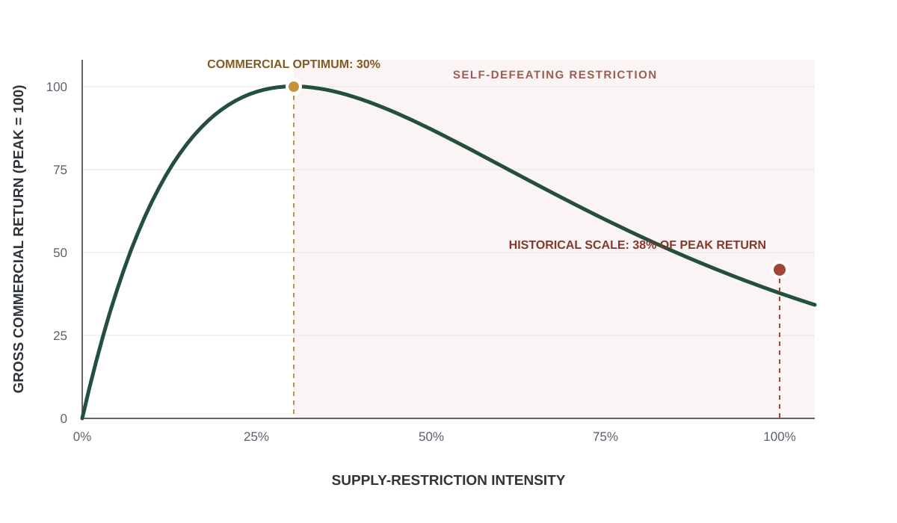

A Python tool for OCR preprocessing of historical Chinese documents:
detects the printed page frame and reconstructs vertical-text layout for
downstream recognition.
sigdiag_ivStata command · econometrics · IV diagnostics
A Stata command that flags fragile instrumental-variables results, using
leave-one-out checks and a deletion-path search to find the observations
driving IV significance.
Co-designed and implemented a village-level survey on smallholder credit
access, measuring whether farmers could obtain credit, how they used it,
and whether access improved agricultural production and household
livelihoods. The field investigation was covered by local news.
Implemented a randomized controlled trial in public and private schools,
randomly assigning classrooms to a dialect-education module or an active
control, and collected survey and test data on students' dialect learning.
Fieldwork, December 2020Fieldwork, December 2020Fieldwork, December 2020Fieldwork, December 2020Fieldwork, December 2020Fieldwork, December 2020
Research
National AI Policy Framing of AI–Labor Substitution
Working paper · click to view figures
I scraped 2,348 AI-related policy initiatives from around the world and used
a large language model to track how their texts frame the relationship between
AI and labor. The map (Figure 1) shows the share of initiatives in each country
that explicitly discuss labor-related issues. Figures 2 and 3 show the policy
posture these texts take toward AI's labor impacts: developmental framing
focuses on improving labor capacity through skills, training, and education,
while defensive framing treats AI as a source of job loss, displacement,
or worker-protection concerns.
Figure 1. Global labor-salient share of national AI policy.
Share of each country's OECD.AI policy initiatives coded as meaningfully
related to labor and work (jobs, workers, skills, employment, training,
displacement, workplace AI). Higher values mean labor occupies a larger
share of a country's AI policy portfolio — not a larger absolute
volume of labor policy. Organisations excluded.
Figure 2. Labor-salient initiatives over time (2015–2026).
Counts of labor-salient and central-labor AI policy initiatives by start
year. 2026 is incomplete.
Figure 3. Mitigation register among labor-salient initiatives (2015–2026).
Among labor-salient initiatives, the policy posture toward labor impacts:
developmental (preparing workers through skills, training, and
adaptation) versus defensive (protecting against job loss,
displacement, and worker harm; defensive combined with “both”),
or none. 2026 is incomplete.
Did the Violence Pay? Modeling Over-Violence in the 18th-Century VOC
Computational model · archival data
I combine Amsterdam prices, Batavia cargo accounts, and newly reconstructed
tree inventories and extirpation records. Cloves sold at roughly 14.9 times
their recorded Asian-side unit cost, while two documented campaigns in 1770
destroyed 6.9 million young clove trees.
A constrained monopoly model traces commercial returns as biological supply
restriction increases. It compares the profit-maximizing restriction level
with the historical scale of destruction, setting enforcement cost to zero:
if the archival policy still lies beyond the profit peak, positive coercion
costs can only strengthen the result.
At the baseline demand elasticity, commercial returns peak at about 30
percent of the historical restriction scale. The archival-scale policy is
approximately 230 percent above that commercial optimum and retains about
38 percent of the benchmark gross return.

Figure 1. When monopoly restriction becomes commercially self-defeating.
The curve combines an isoelastic demand benchmark (|ε| = 1.79)
with the observed 14.9-times clove markup. Restriction initially raises
gross commercial return by increasing price, but returns fall after the
commercial optimum as destroyed volume dominates. Enforcement cost is set
to zero throughout.